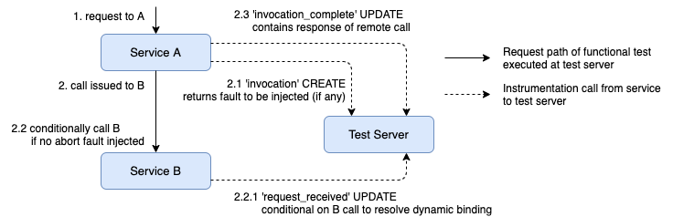
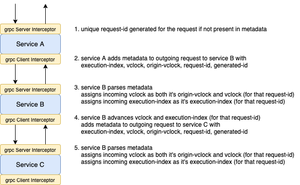

Instrumenting GRPC
In the following sections, we discuss the modifications to the opentelemetry-instrumentation-grpc library to support Filibuster.
Tracking Invocations
This diagram provides a high-level overview of the modifications in the following sections to intercept remote calls and notify the Filibuster server of their response values. It also shows the locations where fault injection information is aggregated and faults are injected.
Metadata Propagation
This diagram provides a high-level overview of the modifications in the following sections to intercept and track metadata and propagate it forward.
Differences between GRPC and HTTP
One of the major differences between HTTP and GRPC is in how it requires that users handle errors.
HTTP
With HTTP, the requests library throws a number of exceptions that must be tested.
For example, if the remote service is unavailable, a requests.exceptions.ConnectionError will be thrown; similarly, if the remote call to the service times out, a requests.exceptions.Timeout will be thrown. There are around 20 of these exceptions and cover library specific errors. Filibuster therefore needs to inject a user-defined subset of these that they want to test for, where some of these errors are context-specific, as a timeout exception will not be thrown when an infinity timeout is specified.
If microservice APIs are written in a REST style, then services will also return HTTP responses containing specific status codes to indicate internal errors, failures, or application logic. As there are 87 possible status codes known to be in use (c.f., Wikipedia) – and, since these error codes are chosen by the application developer to indicate an application-specific abnormal response of some type – Filibuster does not automatically test for all possible status codes. This is important, because a single service might only return one of these codes – it would be pointless to test for the 86 others.
To solve this problem, we use a static analysis on the service code to determine which status codes are returned. In our examples, we use a very simple static analysis that looks for raise statements of the exception types associated with each status code response. This analysis is both an over-approximation and an under-approximation: if the application developer constructs a response manually specifying the status code as an integer, it will be missed, thus under-approximating; and if the application developer happens to raise one of these exceptions in dead code, we will over-approximate.
GRPC
With GRPC, the grpc library throws a single exception grpc._channel._InactiveRpcError.
This grpc._channel._InactiveRpcError exception can be thrown for a number of different reasons: the remote service being unavailable, the remote request timing out, etc. Different types of errors are distinguished using a code parameters on the exception. This code parameter can be set to any of the 20 different status codes provided in the grpc.StatusCode Python module.
Similar to HTTP, we use a lightweight static analysis over the code looking for references to the grpc.StatusCode enum in order to determine the different exception codes to test. Similar to HTTP, this is both an under-approximation and an over-approximation: we under-approximate when the application developer uses the enum’s values as integers directly; we over-approximate when unreachable code contains references to these enums.
Using the values of grpc.StatusCode is a gRPC best practice and was influenced by the use of HTTP status codes in REST designs for indicating error. However, some applications still may encode error responses right into the payload of a successful response in some application specific way. As an example, a service might respond to a request for user information by encoding a boolean into the payload to indicate whether or not the user exists instead of using grpc.StatusCode.NOT_FOUND. Without programmer input, we are unable to automatically determine these data-specific responses – in general, this problem is undecidable – and therefore, Filibuster does not support it.